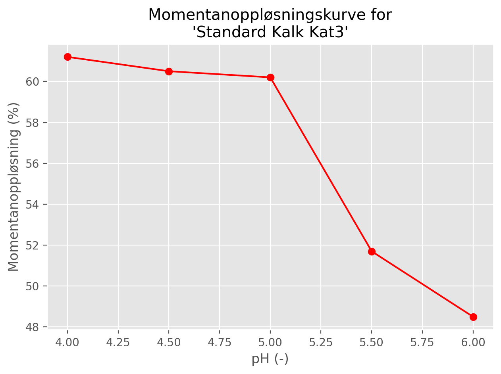

Column tests
Two kinds of column test are performed: instantaneous dissolution and overdosing (see below). Each test involves 5 columns, labelled A to E and each column is typically 19 cm in diameter and at least 205 cm high. Each column is initially filled with 57.9 litres of deionised water containing 0.01% KCl, adjusted to the desired pH using sulphuric acid.
For each lime tested, the supplier must specify the typical proportion of Ca (by mass) in their product, \(F_{Ca}\). This fraction is used in the calculations below.
1 Instantaneous dissolution
Columns A to E are adjusted to have pH values of 4, 4.5, 5, 5.5 and 6, respectively. 0.579 g of dried lime are then added to the top of each column. If this dissolves completely and mixes evenly in the column (which in general it does not), this corresponds to uniform concentrations of 10 mg/l of lime and \(10 F_{Ca}\) mg/l of Ca. In this case, the total mass of Ca dissolved in the column between depths \(x_1\) and \(x_2\) (where \(x_2 > x_1\)) is given by
\[ M_{Ca} = 10 F_{Ca} A (x_2 - x_1) \tag{1}\]
where \(A\) is the cross-sectional area of the column.
In practice, not all the lime dissolves and the columns do equilibrate to uniform concentrations. After 16 hours, the concentration of Ca in each column is determined at different depths using ICP-OES (Inductively Coupled Plasma - Optical Emission Spectrometry). Measurements are taken every 40 cm from the surface down to 2 m - a total of six measurements. A typical dataset for a single column is shown in Table 1.
| Column | pH | Depth_m | Ca_mg/l |
|---|---|---|---|
| A | 4.0 | 0.0 | 2.82 |
| A | 4.0 | 0.4 | 2.62 |
| A | 4.0 | 0.8 | 2.64 |
| A | 4.0 | 1.2 | 2.76 |
| A | 4.0 | 1.6 | 2.81 |
| A | 4.0 | 2.0 | 2.71 |
Table 1 is used to estimate the total amount of Ca that has dissolved in each column after 16 hours. It is assumed that each column is horizontally well-mixed and that concentrations only vary with depth, \(x\). The total amount of Ca between depths \(x_1\) and \(x_2\) is therefore given by the integral
\[ M_{Ca} = A \int_{x_1}^{x_2} C(x) \ dx \tag{2}\]
Furthermore, the overall proportion of the available Ca that has dissolved, called the instantaneous dissolution, is obtained by dividing Equation 2 by Equation 1, both evaluated over the entire column (typically from 0 to 2 m depth)
\[ D_{inst} = \frac{\int_{0}^{2} C(x) \ dx}{10 F_{Ca} (2 - 0)} \tag{3}\]
The integral in Equation 3 can be approximated from the measured data using either Simpson’s rule or the trapezoidal rule (by default, the application uses the trapezoidal rule).
The main output from the instantaneous dissolution test is a characteristic curve showing the dissolution proportion at each pH value (Figure 1).

2 Overdosing
Columns A to E are fixed at pH 4.6. Different amounts of lime are then added to each column, corresponding to the following lime concentrations (assuming complete dissolution): 10, 20, 35, 50 and 85 mg/l. The columns are left to equilibrate for 16 hours and the total instantaneous dissolution for each column is determined using the procedure described in Section 1. The overdosing factor is then calculated as the ratio \(D_{10} / D_{x}\), where \(D_{10}\) is the instantaneous dissolution for the column where 10 mg/l of lime was initially added, and \(D_{x}\) is the instantaneous dissolution for the column where \(x\) mg/l of lime was added.
A typical curve for overdosing factors is shown in Figure 2.